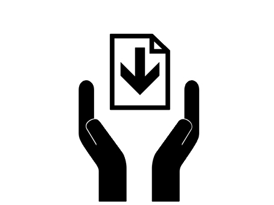

QUIZ 3 nästa vecka istället
Öppna data?
Digital information som är fritt tillgänglig utan inskränkningar (t.ex. i form av immaterialrättsliga hinder såsom upphovsrätt och patent).
Definition från: http://www.opengov.se/blogg/2011/oppen-data-definition/


Exempel på öppna data
- Geodata
- Data om tågavgångar, lokaltrafik
- Befolkningsstatistik
- Miljödata, vattenkvalité
- Data om ekonomiska transaktioner
- Väderdata
- Data från företag
Vad är öppna offentliga data?

"Till främjande av ett fritt meningsutbyte och en allsidig upplysning skall varje svensk medborgare ha rätt att taga del av allmänna handlingar"
Exempel - Öppna offentlig data i Sverige
Cloud computing service models
- IaaS - Infrastructure as a Service
- Amazon EC2/S3, Windows Azure
- En infrastruktur med virtuella maskiner, lastbalanserare, lagring m.m.
- PaaS - Plattform as a Service
- Heroku, Digital Ocean, Google App engine, Apache Stratos
- Virtuell maskin(er) med OS, webbserver, applikationsmiljö
- SaaS - Software as a Service
- Google Apps, Microsoft Office 365
- En färdig applikation driftad i molnet
- BaaS - Backend as a Service
- Firebase, Parse
- Tar hand om backend. Datalagring, push-notifieringar